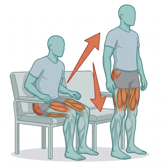
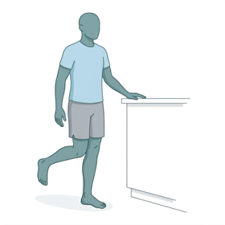
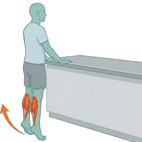

Offline by design
The speech recognition and the language model live in your phone's storage and run on its chip. Basement apartments, rural routes, parking-garage charting — a dead zone changes nothing.
For home health clinicians
CareDraft turns your post-visit dictation into a polished clinical note using AI that runs entirely on your phone's own hardware. No cloud servers. No subscription meter. No signal required.
The speech recognition and the language model live in your phone's storage and run on its chip. Basement apartments, rural routes, parking-garage charting — a dead zone changes nothing.
Cloud scribes rent you intelligence by the month. CareDraft does its thinking on hardware you already own — no subscription, no per-note metering, no price hikes on something you depend on.
Dictation is transcribed and drafted without leaving the device, then encrypted at rest. There is no server copy to breach, sell, or subpoena — we couldn't read your notes if we wanted to.
Follow the dictation
Every hop is a place your patient's story can leak, be retained, or be repurposed.
The entire pipeline, inside the bezel. Bytes sent to the cloud: zero.
How it works
Tap the mic after the visit and talk the way you chart. On-device speech recognition is tuned with home-health vocabulary — gait belts, contact guard, supine-to-sit and all.
A multi-billion-parameter Gemma model rewrites your dictation into clean clinical prose — as a single summary, or section-by-section in your own note template.
Every draft is clearly labeled and never auto-signed. You check each number, side, and medication before it goes anywhere. AI drafts — you decide.
Generate a clean PDF or share the text — after an explicit confirmation that you've reviewed it and are authorized to send it where it's going.
The visit toolkit
Notes are the headline act, but CareDraft carries the rest of the visit bag too — exercise programs, med lists, teaching materials, routing, and mileage. Your records stay encrypted on your phone, same as your notes.
Build a home exercise program in a couple of taps from a searchable library of illustrated exercises — each with step-by-step instructions written for patients, not therapists.

Sit to Stand
3 sets × 10 reps · daily

Single Leg Stance
3 × 30 sec holds · at counter

Standing Heel Raises
2 sets × 15 reps · daily
Point your camera at a medication list or a row of bottles and CareDraft reads it, cleans it up, and turns it into a structured med list — name, dose, frequency, route. The text recognition runs on your phone, like everything else.
Lisinopril
10 mg · once daily · oral
Metformin
500 mg · twice daily · with meals
Apixaban
5 mg · twice daily · oral
A built-in library of plain-language education modules — CHF, COPD, diabetes, fall prevention, wound care, blood thinner safety, and more. Combine modules into a packet for the visit and document the teaching in one step.
Congestive Heart Failure
Key points
When to call your doctor or 911
Type the day's addresses, map them, and drag the stops into the order that makes sense from the driver's seat. When the day is planned, send the whole route's mileage to the vehicle log in one tap.
Placing pins uses your phone's built-in geocoder — the same service your maps app uses, asked only when you tap "map addresses," and never with any clinical content. Routes stay encrypted on-device.
Log trips between visits, capture vehicle expenses, and pull a clean monthly report at tax time — without installing a mileage app that tracks your location and sells the breadcrumbs.
The subscription math
Cloud AI scribes commonly bill $100–$300 per clinician, per month — forever — because every note you draft costs them server time. CareDraft's AI runs on a chip you already bought.
$1,200–3,600/yr
Typical cloud AI scribe subscription, billed as long as you use it
$0/mo
CareDraft's recurring AI fee — your phone does the work, free
| Cloud AI scribe | CareDraft | |
|---|---|---|
| Where the AI runs | Vendor's data center | Your phone's hardware |
| Works with no signal | No | Yes — fully |
| Recurring AI fee | Monthly, per clinician | None |
| Your audio leaves the device | Yes, by design | Never |
| Keeps working if the vendor disappears | No | Yes — it's on your phone |
Security
Most apps ask you to trust their privacy policy. CareDraft is built so there's nothing to trust us with — and what stays on your phone is locked down like it matters. Because it does.
Every note, transcript, and recording is encrypted on the device with authenticated encryption.
Your PIN becomes a key via PBKDF2-HMAC-SHA512 at 210,000 iterations — the current OWASP-recommended work factor.
Open with fingerprint or face using your phone's secure hardware. The PIN stays as the root of trust.
One recovery code, generated on your device, shown once. It's the only spare key — and it's in your pocket, not on our servers.
No sign-up, no clinical analytics, no usage profiles. The app's only network calls are update checks and the one-time model download.
"Delete all data" destroys the encryption keys — everything becomes unreadable instantly, even forensically.
Plain talk
Speech models can mishear numbers, sides, and medication names, and language models can make confident-sounding mistakes. Every draft is labeled as a draft, and reviewing it is part of the job — yours.
CareDraft is a personal drafting tool for post-encounter, de-identified notes. Don't record patient interactions or enter identifiers. We are not a HIPAA Business Associate — by design, we never touch your data.
Your notes exist on your phone and nowhere else. If you lose both your PIN and your recovery code, the data is gone for good — no support ticket can bring it back. That's the cost of nobody else holding a key.
Running a multi-billion-parameter model locally takes recent hardware. The AI model is a one-time multi-gigabyte download at setup; after that, no connection is needed.
Questions
Yes. After one-time setup — installing the app and downloading the AI model — dictation, transcription, drafting, and every tool in the app run entirely on the device. Try it: flip on airplane mode, dictate a note, and watch it draft.
It's transcribed on the device and stored encrypted on the phone. It is never uploaded, never used for training, and never visible to us. There is no "us" in the loop at all.
CareDraft never receives your data, so there's no business-associate relationship to govern — we don't sign BAAs because there's nothing on our side to cover. It's intended for de-identified, post-encounter drafting. Whether you may use it in your workflow depends on your employer's policies and applicable law, so check before you chart.
CareDraft is in field testing on modern Android phones. Local AI is demanding — recent mid-range and flagship devices work best. An iOS release is planned.
Note drafting runs on Google's Gemma open-weight models, executed locally by an on-device inference engine. Speech-to-text uses on-device recognition tuned with clinical vocabulary. Models are downloaded once at setup and live on your phone from then on.
Use the recovery code you saved at setup to unlock and set a new PIN. If you lose both the PIN and the recovery code, your data is unrecoverable — we hold no keys and no copies, so there's no master unlock. Keep that code somewhere safe.
CareDraft is in field testing with home-health clinicians now, and is coming to Google Play.
Coming to Google PlayBuilt by a practicing home-health clinician.